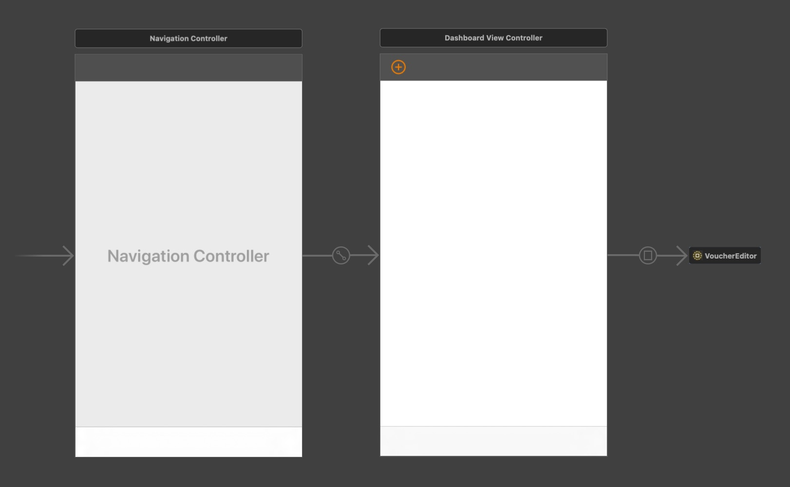

The road to complexity hell is plastered with well intended technologies. And after I’ve had to deal with Apple Xcode’s Interface Builder in every big client project, I’m convinced its promises are an illusion.
So why am I such a hater on the Interface Builder? What I rather wonder is: Why would any professional use it? While the IB may help to build simple rough prototypes (I’m not even sure about that), I can’t regard it anymore as an option for professional apps.
This article ends on a list of 25 issues that I experienced with the Interface Builder across many projects. However, those issues are really just arbitrary symptoms of an underlying problem: The Interface Builder violates fundamental principles of software architecture. We could certainly find even more symptoms because going against basic principles manifests in countless unpredictable ways.
-
Principles of Cohesion: We violate the principle of maximum cohesion as we spread the concern of a single view over two different artifacts. This divide goes through almost all screens and views in a typical commercial project, causing countless friction points.
The issue gets amplified by the fact that every one of those friction points must translate between two different representation standards: One is Swift, the other is an IB specific XML format.
-
Acyclic Dependency Principle: IB files reference UIView- and UIViewController subclasses which, in turn, reference IB files via outlets and name identifiers for XIBs, segues and storyboards.
While this is not good, it is mostly a consequence of violating the SRP.
-
Dependency Inversion Principle: Specifics depend on abstractions. Yet IB files entangle abstract screen flow and view descriptions with highly specific formats and tools. What is logically an independent “view model” technically becomes dependent onto system specifics.
-
Effective artifacts tell the truth: We could interpret all the above principles as aspects of this more fundamental assessment.
For example, the dependencies between Swift types and IB artifacts are not implied by the intended user interface. Nor do they follow from the required technology, considering that the IB’s abstractions are hardly a thin veneer over the respective UI framework (UIKit, AppKit). So those dependencies structure the project in a way that is untrue to its supposed meaning.
Also, user interfaces are hierarchically composed, so the project’s artifacts representing the UI should reflect that structure. IB files can indeed do that, yet they store everything in a format that is only transparent to the IB itself and opaque in all other contexts. This means, in many contexts (most notably with git), IB artifacts don’t tell the truth about UI structure.
-
Complexity increases quadratically: The number of potential pairwise friction points between N moving parts is (N^2 - N) / 2. While 5 technologies can have 10 friction points, 6 technologies can already have 15:
By nature, we think linearly, but complexity grows much faster, so we constantly underestimate it. We let technologies and dependencies creep in because each by itself is theoretically useful. Yet overall, they make the complexity of our system explode.
This principle is by no means limited to software systems, yet it is relevant here. We should be super reluctant to add unnecessary technologies to our tech stack, even if they promise to be worth it.
-
Because you have to draw a line somewhere between visual editing and coding, and because many views can’t be represented in IB files (due to custom drawing, dynamic layouts, views from external frameworks, lazyness etc.), IB files virtually never provide an idea of how screens will actually look, which defeats much of the IB’s purpose.
In practice, most storyboards look something like this:

-
The IB is slow. Opening and loading a storyboard usually has a significant delay.
-
The IB does not make it obvious where configurations deviate from defaults, i.e. where they have been manipulated by a developer.
-
Handleing complex interfaces through pointing, zooming, scrolling and selecting, intertwined with keyboard input is actually pretty fucking slow.
-
Algorithmic (dynamic/generic) layouts are impossible. However, often the mere existence of a view is determined at runtime, or layouts depend on data.
-
What constraints are actually applied is less explicit, in particular in the context of the code.
-
IB files create a mess with collaboration and version control systems like git.
-
IB files mess up the architecture I: They entangle the logical definition of the interface (which constitutes something like a “view model”) with highly system specific file formats.
-
IB files mess up the architecture II: They entangle the logical definition of screen flow (high level navigation) with highly system specific file formats.
-
Setting very specific constraints with multipliers etc. and also debugging layout issues are a nightmare with the IB.
-
Coding animations often requires to access or even replace constraints. Good luck doing that when using the IB!
-
There are more initializers and functions like prepare(for segue: ...) to worry about as well as the general interoperation between code and IB files.
-
Communicating with views requires to create outlets, which is actually quite cumbersome.
-
Your app will be harder to port to other platforms, even within the Apple universe.
-
It is more cumbersome to turn views into reusable custom views when they live in IB files. This also leads to massive view controllers.
-
You’ll encounter a bunch of issues when trying to package IB files into frameworks and Cocoapods.
-
Subviews are optional. Either you unwrap them everytime or you make them implicitly unwrapped. The latter option is common practice but can (and did in client projects) lead to crashes.
-
It is impossible to pass parameters to custom designated initializers of your views and view controllers. This stark limitation can compromise clean design and architecture.
-
The Refactor-Rename function in Xcode will not always rename all outlet connections in IB files, leading to crashes. You’ll need to reconnect renamed outlets by hand.
-
You’ll deal with a whole new type of “compilation” error, which is also opaque and hard to debug:

- Designing custom view classes through the IB is cumbersome and requires to use IB “designables”. Plus:
- IB must recompile your whole project in order to display these designables, which makes the IB performance problems even worse.
@IB_Designable is not well documented by Apple.@IB_Designable rendering causes its own type of build errors:
-
IB will not recognize when you move a referenced class to another module (framework, cocoapod etc.). If you forget to adapt the module manually in IB, you’ll be surprised by chrashes.
-
It’s impossible to define insets, offsets, multipliers, sizes, colors, fonts etc. in one place as part of a style. Much less can you compute them dynamically, for instance to depend on screen size, device type or user preference.
-
Using the IB makes code harder to debug. For instance, setting a breakpoint in a view’s or view controller’s initializer won’t tell you what triggered the creation of that object. Also, you can’t search for a term like MyView( in your project to find all uses/clients of that view class.
- Using the IB will make it harder to migrate to more modern code-based and declarative technologies like SwiftUI.
Looking at pinciple problems and some of their concrete symptoms, using the traditional Interface Builder should be considered insane – in particular in light of how easy programmatic layout with Swift has become, with layout anchors, safe areas, frameworks like GetLaid and, of course, SwiftUI.